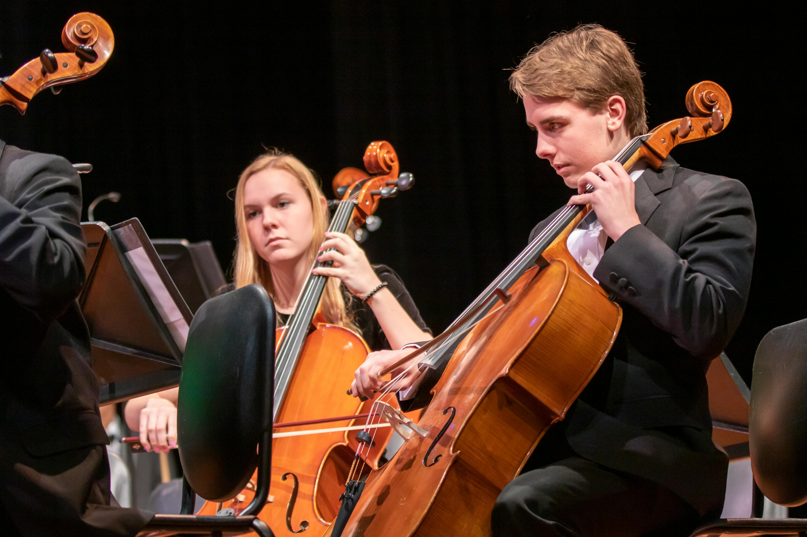

About Harmony Virtuoso
Harmony Virtuoso is a multi-instrumentalist and composer with over 20 years of experience in the music industry. Trained in classical piano from a young age, Harmony's passion for music led to mastering multiple instruments including violin, guitar, cello, and flute.
With a degree in Music Composition from the prestigious Juilliard School, Harmony has composed for orchestras, chamber ensembles, and solo instruments. Their innovative approach to blending classical techniques with modern electronic elements has earned critical acclaim and a dedicated following.